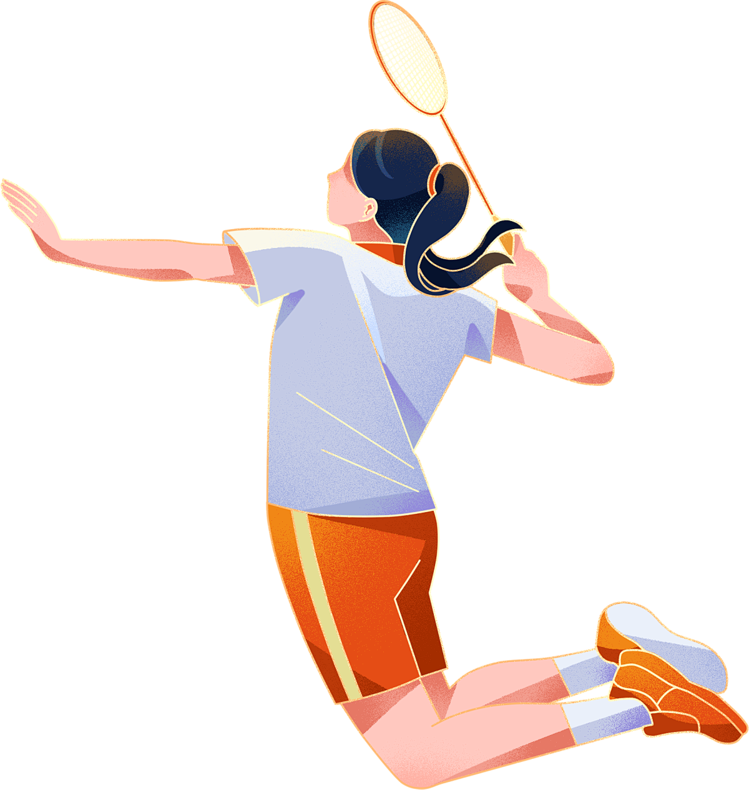

喜欢的事情
我平时也非常热爱运动，运动的过程，也是磨练意志力的过程，能够长期坚持运动的人，收获的不仅仅是健康的身心，还有强大的意志力。
我喜欢羽毛球，因为它不仅是一项锻炼身体的运动，还能带来无穷的乐趣和挑战。打羽毛球时，我可以尽情奔跑和跳跃，释放压力，享受运动带来的快感。羽毛球需要快速的反应和敏捷的身手，这让我在比赛中感受到紧张和兴奋。同时，通过与朋友或队友一起打球，我结识了许多志同道合的伙伴，增强了团队合作精神。每一次比赛和训练都是一次自我挑战和进步的机会，这种不断超越自我的感觉让我对羽毛球充满了热爱。
